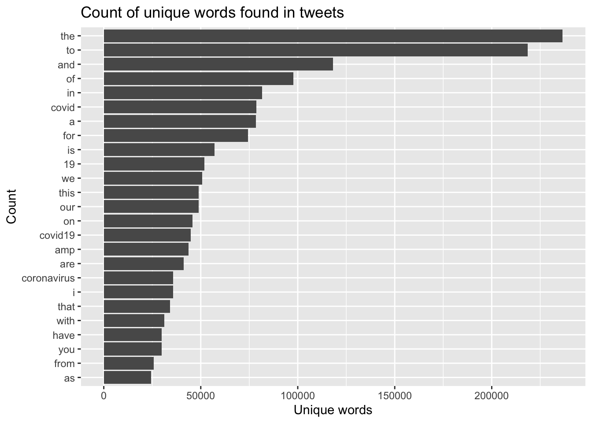

Chapter 27 An intro to text analysis
Throughout this course, we’ve been focused on finding information in structured data. We’ve learned a lot of techniques to do that, and we’ve learned how the creative mixing and matching of those skills can find new insights.
What happens when the insights are in unstructured data? Like a block of text?
Turning unstructured text into data to analyze is a whole course in and of itself – and one worth taking if you’ve got the credit hours – but some simple stuff is in the grasp of basic data analysis.
To do this, we’ll need a new library – tidytext, which you can guess by the name plays very nicely with the tidyverse. So install it with install.packages("tidytext") and we’ll get rolling.
library(tidyverse)
library(tidytext)
library(janitor)
library(lubridate)Here’s the question we’re going to go after: How did federal politicians talk about the coronavirus pandemic on Twitter?
To answer this question, we’ll use a dataset of tweets posted by federal politicians from both campaign and official accounts that mentioned either “COVID” or “coronavirus” beginning on Feb. 1, 2020. This dataset doesn’t include retweets, only original tweets. Let’s read in this data and examine it:
covid_tweets <- read_rds('data/covid_tweets.rds')We can see what it looks like with head:
head(covid_tweets)## # A tibble: 6 x 12
## id user_name content created branch state district title
## <dbl> <chr> <chr> <dttm> <chr> <chr> <chr> <chr>
## 1 1.46e18 RepCharli… "What are … 2021-11-24 21:53:05 H FL 13 Hous…
## 2 1.46e18 swan4cong… "Joe Biden… 2021-11-24 21:42:53 H GA 10 Hous…
## 3 1.46e18 TonyVargas "This than… 2021-11-24 21:32:43 H NE 02 Hous…
## 4 1.46e18 RepGregSt… "I wonder … 2021-11-24 21:16:48 H FL 17 Hous…
## 5 1.46e18 Squires20… "Don’t for… 2021-11-24 20:36:53 H TX 22 Hous…
## 6 1.46e18 RepDerekK… "90% of Am… 2021-11-24 20:33:39 H WA 06 Hous…
## # … with 4 more variables: first_name <chr>, last_name <chr>, gender <chr>,
## # party <chr>What we want to do is to make the content column easier to analyze. Let’s say we want to find out the most commonly used words. We’ll probably want to remove URLs from the text of the tweets since they aren’t actual words. Let’s use mutate to make that happen:
covid_tweets <- covid_tweets %>%
mutate(content = gsub("http.*","", content))If you are trying to create a list of unique words, R will treat differences in capitalization as unique and also will include punctuation by default, even using its unique function:
a_list_of_words <- c("Dog", "dog", "dog", "cat", "cat", ",")
unique(a_list_of_words)## [1] "Dog" "dog" "cat" ","Fortunately, this is a solved problem with tidytext, which has a function called unnest_tokens that will convert the text to lowercase and remove all punctuation. The way that unnest_tokens works is that we tell it what we want to call the field we’re creating with this breaking apart, then we tell it what we’re breaking apart – what field has all the text in it. For us, that’s the content column:
unique_words <- covid_tweets %>% select(content) %>%
unnest_tokens(word, content)
View(unique_words)Now we can look at the top words in this dataset. Let’s limit ourselves to making a plot of the top 25 words:
unique_words %>%
count(word, sort = TRUE) %>%
top_n(25) %>%
mutate(word = reorder(word, n)) %>%
ggplot(aes(x = word, y = n)) +
geom_col() +
xlab(NULL) +
coord_flip() +
labs(x = "Count",
y = "Unique words",
title = "Count of unique words found in tweets")## Selecting by n
Well, that’s a bit underwhelming - a lot of very common (and short) words. This also is a solved problem in working with text data, and words like “a” and “the” are known as “stop words.” In most cases you’ll want to remove them from your analysis since they are so common. Tidytext provides a dataframe of them:
data("stop_words")Then we’re going to use a function we haven’t used yet called an anti_join, which filters out any matches. So we’ll anti_join the stop words and get a list of words that aren’t stop words.
From there, we can get a simple word frequency by just grouping them together and counting them. We can borrow the percent code from above to get a percent of the words our top 10 words represent.
unique_words %>%
anti_join(stop_words) %>%
group_by(word) %>%
tally(sort=TRUE) %>%
mutate(percent = (n/sum(n))*100) %>%
top_n(10)## Joining, by = "word"## Selecting by percent## # A tibble: 10 x 3
## word n percent
## <chr> <int> <dbl>
## 1 covid 78694 2.91
## 2 19 51817 1.91
## 3 covid19 44862 1.66
## 4 amp 43735 1.62
## 5 coronavirus 35713 1.32
## 6 health 20832 0.769
## 7 pandemic 20494 0.757
## 8 relief 17576 0.649
## 9 people 14046 0.519
## 10 vaccine 12707 0.469Those seem like more relevant unique words. Now, here’s where we can start to do more interesting and meaningful analysis. Let’s create two dataframes of unique words based on time: one for all of 2020 and the other for all of 2021:
unique_words_2020 <- covid_tweets %>%
filter(created < '2021-01-01') %>%
select(content) %>%
unnest_tokens(word, content)
unique_words_2021 <- covid_tweets %>%
filter(created >= '2021-01-01') %>%
select(content) %>%
unnest_tokens(word, content)Then we can create top 10 lists for both of them and compare:
unique_words_2020 %>%
anti_join(stop_words) %>%
group_by(word) %>%
tally(sort=TRUE) %>%
mutate(percent = (n/sum(n))*100) %>%
top_n(10)## Joining, by = "word"## Selecting by percent## # A tibble: 10 x 3
## word n percent
## <chr> <int> <dbl>
## 1 covid 47028 2.33
## 2 covid19 36636 1.81
## 3 19 34373 1.70
## 4 coronavirus 34338 1.70
## 5 amp 33559 1.66
## 6 health 16697 0.826
## 7 pandemic 14957 0.740
## 8 relief 12672 0.627
## 9 people 10619 0.525
## 10 crisis 9125 0.451unique_words_2021 %>%
anti_join(stop_words) %>%
group_by(word) %>%
tally(sort=TRUE) %>%
mutate(percent = (n/sum(n))*100) %>%
top_n(10)## Joining, by = "word"
## Selecting by percent## # A tibble: 10 x 3
## word n percent
## <chr> <int> <dbl>
## 1 covid 31666 4.61
## 2 19 17444 2.54
## 3 amp 10176 1.48
## 4 vaccine 8982 1.31
## 5 covid19 8226 1.20
## 6 pandemic 5537 0.807
## 7 relief 4904 0.715
## 8 health 4135 0.603
## 9 vaccines 3516 0.512
## 10 people 3427 0.499In the 2021 top 10 list, “vaccine” and its variations are much more prominent, which makes sense, while “testing” drops out of the top 10 compared to 2020.
27.1 Going beyond a single word
The next step in text analysis is using ngrams. An ngram is any combination of words that you specify. Two word ngrams are called bigrams (bi-grams). Three would be trigrams. And so forth.
The code to make ngrams is similar to what we did above, but involves some more twists.
So this block is is going to do the following:
- Use the covid_tweets data we created above, and filter for pre-2021 tweets.
- Unnest the tokens again, but instead we’re going to create a field called bigram, break apart summary, but we’re going to specify the tokens in this case are ngrams of 2.
- We’re going to make things easier to read and split bigrams into word1 and word2.
- We’re going to filter out stopwords again, but this time we’re going to do it in both word1 and word2 using a slightly different filtering method.
- Because of some weirdness in calculating the percentage, we’re going to put bigram back together again, now that the stop words are gone.
- We’ll then group by, count and create a percent just like we did above.
- We’ll then use top_n to give us the top 10 bigrams.
covid_tweets %>%
filter(created < '2021-01-01') %>%
unnest_tokens(bigram, content, token = "ngrams", n = 2) %>%
separate(bigram, c("word1", "word2"), sep = " ") %>%
filter(!word1 %in% stop_words$word) %>%
filter(!word2 %in% stop_words$word) %>%
mutate(bigram = paste(word1, word2, sep=" ")) %>%
group_by(bigram) %>%
tally(sort=TRUE) %>%
mutate(percent = (n/sum(n))*100) %>%
top_n(10)## Selecting by percent## # A tibble: 10 x 3
## bigram n percent
## <chr> <int> <dbl>
## 1 covid 19 32302 3.52
## 2 health care 4388 0.478
## 3 public health 3908 0.426
## 4 covid19 pandemic 3206 0.349
## 5 town hall 3014 0.328
## 6 coronavirus pandemic 2915 0.318
## 7 19 pandemic 2670 0.291
## 8 covid relief 2246 0.245
## 9 relief package 2062 0.225
## 10 covid ー 1832 0.200And we already have a different, more nuanced result. Health was among the top single words, and we can see that “health care” and “public health” are among the top 2-word phrases. What about after 2021?
covid_tweets %>%
filter(created >= '2021-01-01') %>%
unnest_tokens(bigram, content, token = "ngrams", n = 2) %>%
separate(bigram, c("word1", "word2"), sep = " ") %>%
filter(!word1 %in% stop_words$word) %>%
filter(!word2 %in% stop_words$word) %>%
mutate(bigram = paste(word1, word2, sep=" ")) %>%
group_by(bigram) %>%
tally(sort=TRUE) %>%
mutate(percent = (n/sum(n))*100) %>%
top_n(10)## Selecting by percent## # A tibble: 10 x 3
## bigram n percent
## <chr> <int> <dbl>
## 1 covid 19 17357 5.35
## 2 19 vaccine 2638 0.814
## 3 covid relief 2159 0.666
## 4 19 pandemic 1495 0.461
## 5 covid19 vaccine 1227 0.379
## 6 covid vaccine 1099 0.339
## 7 health care 908 0.280
## 8 covid19 pandemic 872 0.269
## 9 public health 860 0.265
## 10 19 relief 805 0.248While “covid 19” is still the leading phrase, vaccine-related phrases dominate the top 10, and “public health” and “health care” have slipped down the list.
So far, we’ve only looked at the entire set of tweets, not any characteristics of who posted them. Would these lists be any different for Democrats and Republicans? To find out, we just need to add to our filter.
covid_tweets %>%
filter(created < '2021-01-01', party == 'D') %>%
unnest_tokens(bigram, content, token = "ngrams", n = 2) %>%
separate(bigram, c("word1", "word2"), sep = " ") %>%
filter(!word1 %in% stop_words$word) %>%
filter(!word2 %in% stop_words$word) %>%
mutate(bigram = paste(word1, word2, sep=" ")) %>%
group_by(bigram) %>%
tally(sort=TRUE) %>%
mutate(percent = (n/sum(n))*100) %>%
top_n(10)## Selecting by percent## # A tibble: 10 x 3
## bigram n percent
## <chr> <int> <dbl>
## 1 covid 19 22182 3.57
## 2 health care 3398 0.547
## 3 public health 3314 0.534
## 4 town hall 2481 0.400
## 5 covid19 pandemic 2426 0.391
## 6 19 pandemic 1923 0.310
## 7 coronavirus pandemic 1903 0.307
## 8 covid relief 1525 0.246
## 9 relief package 1478 0.238
## 10 social distancing 1373 0.221covid_tweets %>%
filter(created < '2021-01-01', party == 'R') %>%
unnest_tokens(bigram, content, token = "ngrams", n = 2) %>%
separate(bigram, c("word1", "word2"), sep = " ") %>%
filter(!word1 %in% stop_words$word) %>%
filter(!word2 %in% stop_words$word) %>%
mutate(bigram = paste(word1, word2, sep=" ")) %>%
group_by(bigram) %>%
tally(sort=TRUE) %>%
mutate(percent = (n/sum(n))*100) %>%
top_n(10)## Selecting by percent## # A tibble: 10 x 3
## bigram n percent
## <chr> <int> <dbl>
## 1 covid 19 9901 3.45
## 2 coronavirus pandemic 966 0.336
## 3 health care 943 0.328
## 4 ー 19 782 0.272
## 5 covid ー 782 0.272
## 6 covid19 pandemic 769 0.268
## 7 cares act 759 0.264
## 8 19 pandemic 733 0.255
## 9 american people 711 0.248
## 10 covid relief 703 0.245Now we can begin to see some differences between the parties. We also could do the same for different kinds of accounts: the title column represents the role of the account, and if it includes “Candidate” then the tweet is from a campaign account. Let’s compare House of Representatives’ official and campaign tweets during 2020:
covid_tweets %>%
filter(created < '2021-01-01', title == 'House Representative') %>%
unnest_tokens(bigram, content, token = "ngrams", n = 2) %>%
separate(bigram, c("word1", "word2"), sep = " ") %>%
filter(!word1 %in% stop_words$word) %>%
filter(!word2 %in% stop_words$word) %>%
mutate(bigram = paste(word1, word2, sep=" ")) %>%
group_by(bigram) %>%
tally(sort=TRUE) %>%
mutate(percent = (n/sum(n))*100) %>%
top_n(10)## Selecting by percent## # A tibble: 10 x 3
## bigram n percent
## <chr> <int> <dbl>
## 1 covid 19 15796 3.53
## 2 town hall 2265 0.507
## 3 health care 2093 0.468
## 4 public health 2033 0.455
## 5 covid19 pandemic 1851 0.414
## 6 19 pandemic 1522 0.341
## 7 coronavirus pandemic 1457 0.326
## 8 covid relief 1108 0.248
## 9 telephone town 1051 0.235
## 10 relief package 1010 0.226covid_tweets %>%
filter(created < '2021-01-01', title == 'House Candidate') %>%
unnest_tokens(bigram, content, token = "ngrams", n = 2) %>%
separate(bigram, c("word1", "word2"), sep = " ") %>%
filter(!word1 %in% stop_words$word) %>%
filter(!word2 %in% stop_words$word) %>%
mutate(bigram = paste(word1, word2, sep=" ")) %>%
group_by(bigram) %>%
tally(sort=TRUE) %>%
mutate(percent = (n/sum(n))*100) %>%
top_n(10)## Selecting by percent## # A tibble: 10 x 3
## bigram n percent
## <chr> <int> <dbl>
## 1 covid 19 8378 3.38
## 2 public health 778 0.314
## 3 covid ー 722 0.291
## 4 ー 19 721 0.291
## 5 health care 721 0.291
## 6 19 pandemic 519 0.209
## 7 social distancing 518 0.209
## 8 coronavirus pandemic 512 0.207
## 9 town hall 482 0.195
## 10 covid relief 458 0.185There are some differences here, too, but also some potential challenges to doing an analysis. For one, there are variations of words like “vaccine” that could probably be standardized - maybe using OpenRefine - that would give us cleaner results. There might be some words among our list of stop words that actually are meaningful in this context.
27.2 Sentiment Analysis
Another popular use of text analysis is to measure the sentiment of a word - whether it expresses a positive or negative idea - and tidytext has built-in tools to make that possible. We use word counts like we’ve already calculated and bring in a dataframe of words (called a lexicon) along with their sentiments using a function called get_sentiments. The most common dataframe is called “bing” which has nothing to do with the Microsoft search engine. Let’s load it:
bing <- get_sentiments("bing")
bing_word_counts_2020 <- unique_words_2020 %>%
inner_join(bing) %>%
count(word, sentiment, sort = TRUE)## Joining, by = "word"bing_word_counts_2021 <- unique_words_2021 %>%
inner_join(bing) %>%
count(word, sentiment, sort = TRUE)## Joining, by = "word"View(bing_word_counts_2020)
View(bing_word_counts_2021)Gauging the sentiment of a word can be heavily dependent on the context, and as with other types of text analysis sometimes larger patterns are more meaningful than individual results. But the potential with text analysis is vast: knowing what words and phrases that public officials employ can be a way to evaluate their priorities, cohesiveness and tactics for persuading voters and their colleagues. And those words and phrases are data.